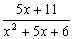
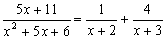
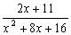
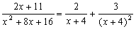

部分分式(I)及一元二次方程
程式可以將一個分式(分母為二次多項式及分子為一次多項式)分解為二個分母為一次多項式的分式。 程式亦可以解一元二次方程的兩根及計算二次函數的極大/極小值，另外若果輸入數據為整數(或分數)及答案為有理數時，答案會以分數形式表示，建議將計數機預先設定為假分數形式表示(按六次 Mode，再按 1 2 EXE )。
程式編寫日期: 2007年1月20日
程式 (100 bytes)
?→A: ?→B: ?→M: B┘(2A→B: AB2M-:
B + √- M┘A→C: - Ans→Y: - 2B - Ans→X:
?→X: ?→Y: - Ans→B◢ C◢
B≠C => A(B - C→A => (XB - Y)┘A◢
B=C => X┘A◢ (Y - XC)┘A
例題1: 將下列分式化為部分分式。

按 Prog 1 再按 1 EXE 5 EXE 6 EXE (先輸入分母)
5 EXE 11 EXE (顯示第一個分式分母為2) EXE (顯示第二個分式分母為3)
EXE (顯示第一個分式分子為1) EXE (顯示第二個分式分子為4)
所以

例題2: 將下列分式化為部分分式。

按 Prog 1 再按 1 EXE 8 EXE 16 EXE (先輸入分母)
2 EXE 11 EXE (顯示第一個分式分母為4)
EXE (顯示第二個分式分母為4，由於數值相同表示原式分母為完全平方)
EXE (顯示第一個分式分子為2) EXE (顯示第二個分式分子為3)
所以

例題3: 解 x2 - 7x + 12 = 0
按 Prog 1 再按 1 EXE - 7 EXE 12 EXE (顯示第一個實數根為4) EXE (顯示第二個實數根為3)
計算完結後按 AC 終止程式。
∴ x = 4 或 x = 3
註1: 程式執行完成後，按 RCL X、RCL Y 分別顯示一元二次方程兩個根的數值，按 RCL M 顯示二次函數最大/最小值。
註2: 若果一元二次方程無實解或部分分式不能分解，計數機會出現Math error，不過二次函數的最大/最小值會被儲存在記憶M之中。